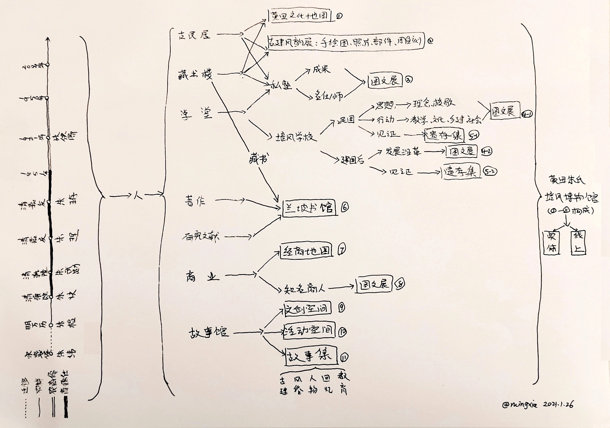

古村不老——黄田朱氏培风博物馆构想
古村不老，只要故事和人依旧生动。
山居黄田已有三年，尽享了它的群山相拥、古村雅韵、四季流转，这些都是古村无私的馈赠。然而除了享用这一方天地外，却未曾为她做些什么，因为——我对她并不真的了解。
只所以说并不真的了解，一方面是因为在很长一段时间，潜意识里我并未真正走近这个村子，就像是常住在村子的游客一样，我是我，村子是村子，我只是安住在这里，过自己的生活，做自己的事。我跟村子保持着某种距离。
另一方面而言，是因为这个曾经繁盛的古村，身上镶嵌的珍珠宝玉被湮没了，那些曾经触动人心的数字变得模糊，即便是现居村民，所知的也不比导游词多，然而，导游词更多只是抽象的概括，抽象便会含糊。而我的经验，含糊不清的文字会被风吹走。所以，能够真正触动人心的，可能只有高大的古建筑和不为岁月所动的流淌不息的溪水了。
但不幸的是，古建筑只对读懂他的人畅所欲言，如此一来，想必在很多人的眼里，黄田就变得跟安徽众多的古村一样，泯然众人。
元旦之前，听闻2021年恰是培风学校100周年，在苏老师家聚餐，大家也商量希望可以做点什么，来重新发现黄田的辉煌教育史，以念过往，以资将来。在苏老师的委托下，我开始重读所能获得的所有资料，然后试图对千年黄田的历史文化进行系统的梳理，以找到行动的路径。
大概几周的时间，终于有所收获，也让我有机会更深入的阅读日夜所在的这个村子，并为之倾倒。此项工作，对我而言，有三重价值：
- 生活，必当此时此地。黄田正是我的此时此地，只有了解（过往与现在），才有接纳（被古老和当下），我才能真的脚踏实地。行走在村子里，脚下的石板路、眼前的建筑群也开始有了温度——不是路过，似是故人。然后，他曾有的浓重的历史文化，也定会自然而然的给予我滋润和启发。
- 初到黄田时，我儿只有一岁多，而今已经四岁。对于孩子的成长，我坚信“三岁前重自然环境，三岁后重人文环境”这个原则，历史上的黄田，自然与人文并重，而今却如中国大部分乡村一样，成为文化荒芜之地。所以，为了生活在这里的孩子，我们也应该去寻回被湮没的浓重的历史和文化。
- 生活在此，便有一份责任，以己之能，使其更好。
下图即是我的工作成果（点此看大图），图片之后我将会做进一步的说明，以帮助阅读到这份文件的朋友，能够全面、详尽的了解培风博物馆的构想逻辑、框架和实施方案。唯有了解，才有参与进来的可能，尤其是在此或者散落各地的朱氏后人。
{kind=link}
培风博物馆构想图

构想逻辑
构想图包含三个逻辑部分：以人物串联起的千年发展史、与人相关的历史文化资源、可供整理和呈现的单元，然后一个个单元构成了一个完整的培风博物馆（包含实体、线上两种形式）。
- 以人物串联起的千年发展史：当前所看到的时间轴，只是标示出了黄田村发展的重要和关键节点（的人物），计划中的会将所知的重要人物全部标注上去，比如明清期间的十三名进士、六十一位举人、村中各个古建筑、藏书楼的创建者、名仕以及知名商人……每一个人都是古村历史文化的创建者，也都与当下的黄田有着不可分割的联系。
- 与人相关的历史文化资源：筛选整理，共包含七个部分。黄田历史文化之夺目处，以藏书、教育为甚，然而商人反哺，私学兴盛、藏书十万，其后高官、大儒频出，仕者如朱理官至巡抚为民请命，儒者如朱珔著作等身名满天下，繁盛至此，则建筑自是高大华丽，雕梁画栋，于今可见。以上所列，俱为一体，若单一抽出实有所难，因此一一网罗，构建一座培风博物馆，系统的收集/征集、整理为先，然后可以呈现与众，使历史文化可观、可触、可感。
- 可供整理和呈现的单元：上图带方框者有11处，共同构成未来的培风博物馆。需要特别说明的是：故事馆，是实体博物馆的空间用途之一，其中的“故事集”，是希望能穷尽可能的收集并分类编号所有与黄田相关的文字记忆，并以数字和纸质两种形式保存。
实施进度
目前博物馆处于筹备初期，亦需各方力量参与和支持：或是出谋划策、或是参与奔走、或是协助收集整理信息、或是广为联络以征集文章和展品、或是贡献技能。
村中贤达有意者可直接联系苏老师，或者添加微信mingxiacd与我交流。
最后更新：2021年1月28日、返回个人介绍页